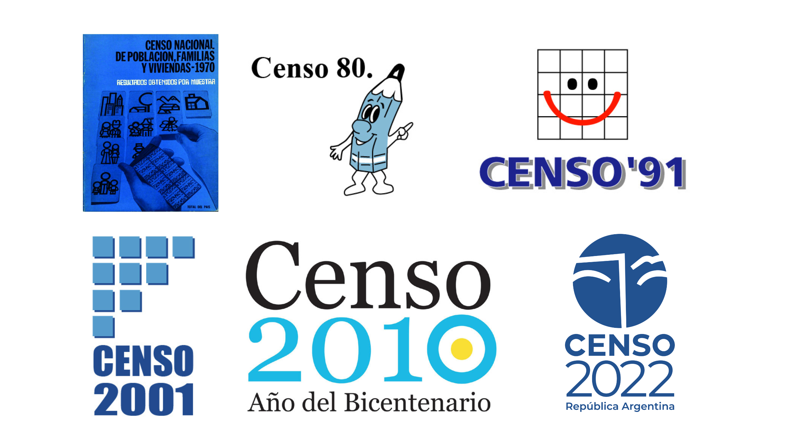
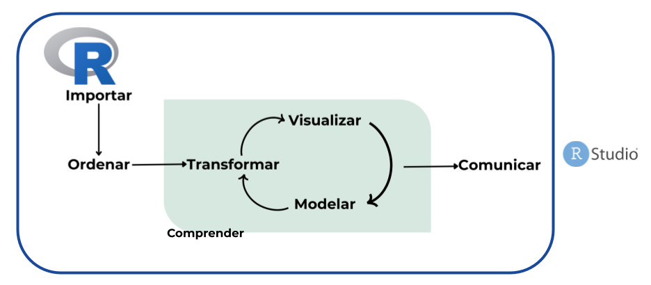
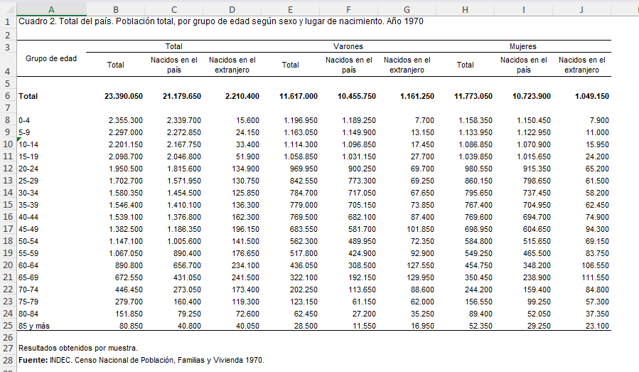
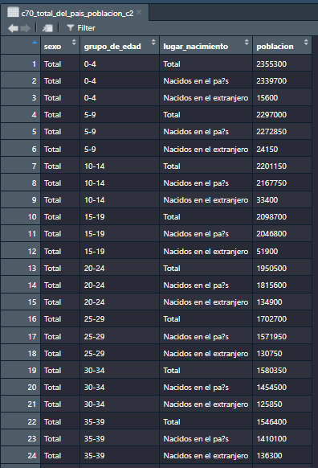
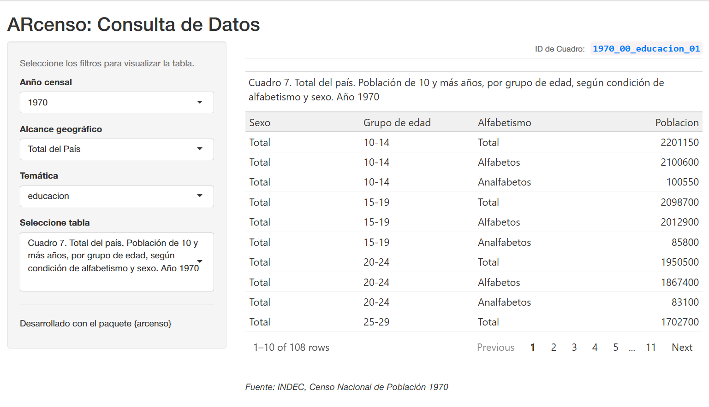
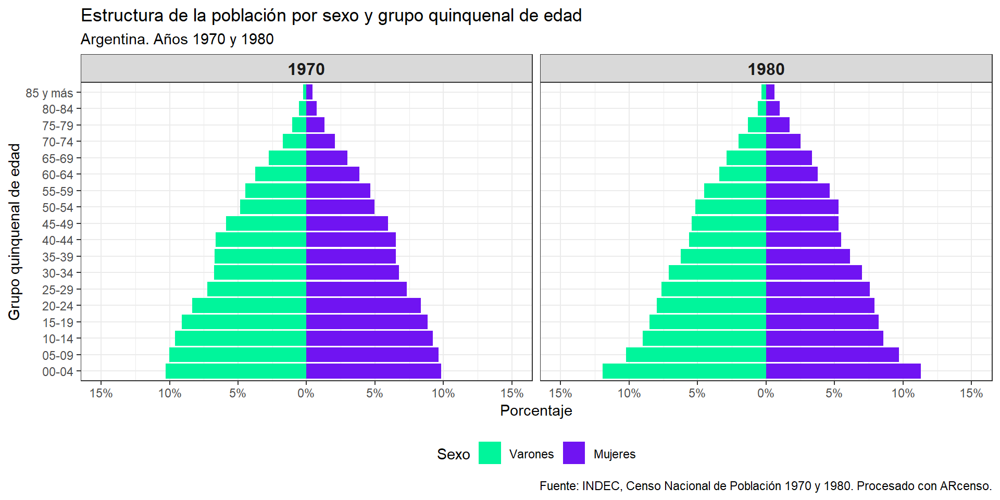
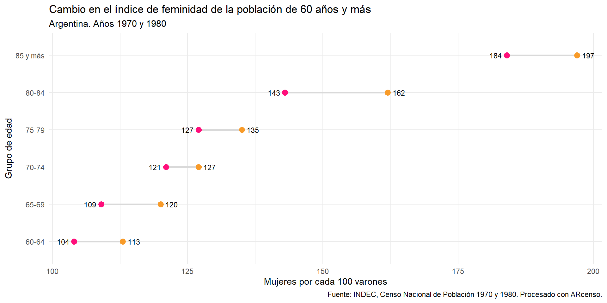

De datos censales a análisis demográficos con ARcenso
Taller práctico en R
UMET - NIS
2026-05-12
Datos censales
“El censo de población es la operación que consiste en recopilar, elaborar, evaluar, analizar y difundir, de manera simultánea, datos demográficos, económicos y sociales de todas las personas de un país o de una parte bien delimitada de un país, en un momento determinado.”1
Características esenciales que debe cumplir un censo:
Universalidad: cubrir a toda la población y/o todas las viviendas.
Simultaneidad: referirse a la misma fecha de referencia.
Periodicidad: realizarse en intervalos regulares, generalmente cada 10 años.
Individualidad: registrar datos de cada persona y cada vivienda de manera separada.
Los censos de población del INDEC
Toda la data de los censos en Argentina está en censo.gob.ar

Importancia de los datos censales
Es una herramienta clave para entender las caracteristicas y necesidades de la población.
Proporcionan datos esenciales para la planificación y el desarrollo de las políticas públicas.
Planificación social y económica
Investigación académica y estudios sociales
Investigaciones de mercado y mucho más…
R
Res una herramienta orientada al trabajo estadístico y análisis de datos.Es un software libre y de código abierto, lo que facilita la colaboración y reproducibilidad.
Existen otros paquetes de datos censales desarrollados en
R(por ejemplo,censobrpara Brasil), lo que crea un ecosistema que favorece la interoperabilidad y el aprendizaje compartido.
Proceso de trabajo en ciencia de datos con R

ARcenso
Es una iniciativa ciudadana que nació de nuestra experiencia profesional con datos censales en el INDEC, motivada por la necesidad de contar con datos accesibles y ordenados, e inspirada en el espíritu colaborativo de la comunidad R. Con el apoyo del Programa de Campeonas de rOpenSci (2023–2024), el proyecto es liderado por Andrea Gómez Vargas, junto a Emanuel Ciardullo como co-desarrollador y Luis D. Verde como mentor.
¿Cuál es la propuesta?
Generar un paquete que permita disponer de los datos oficiales de los censos nacionales de población en Argentina provenientes del INDEC desde 1970 hasta 2022, homogeneizados, ordenados y listos para usar.
Objetivo
Disponibilidad: de excel a tablas ordenadas en R


¿Por qué?
Análisis históricos y memoria digital
Actualmente los resultados históricos censales de 1970, 1980, 1991, 2001, 2010 y 2022 están disponibles en distintos formatos a través de libros físicos, PDFs, archivos en formato excel o en REDATAM, sin contar con un sistema o formato unificado que permita trabajar con los datos de estos seis periodos censales como base de datos.
Antes de las funciones: Marco conceptual
Principios FAIR
Localizable (Findable):
Datos censales centralizados que abarcan seis periodos censales nacionales (1970–2022)
Accesible (Accessible):
Conjuntos de datos censales públicos, homogenizados, disponibles en formatos abiertos y acompañados de documentación y metadatos completos.
Interoperable (Interoperable):
Tablas ordenadas (formato tidy) y bien estructuradas que permiten una integración sencilla con otros conjuntos de datos.
Reutilizable (Reusable):
Incluye descripciones detalladas de variables, codificación estandarizada, licencias abiertas y estructuras de datos reproducibles que facilitan su uso a largo plazo y la comparación entre estudios.
Estructura y temas de los datos censales según la ONU
Temas del Censo Núcleo: Variables esenciales (ej.: edad, sexo, población)
Núcleo derivado: Variables calculadas (ej.: tasas de fecundidad)
Adicionales: Temas específicos del país (ej.: religión)
Unidades Conceptuales Población: Personas individuales
Vivienda: Unidades habitacionales físicas
Hogar: Personas que comparten una vivienda
Cobertura Geográfica
Nacional: Total del país
Jurisdicciones: (23 provincias de Argentina y la Ciudad Autónoma de Buenos Aires)
ARcenso 📦
¿Cómo usarlo?
Instalación
Activación del paquete
Principales funciones
geo_metadata
Codigos geograficos estándar de INDEC
geo_metadata
#> # A tibble: 25 x 4
#> cod_geo nombre_geo nombre_corto iso_3166_2
#> <chr> <fct> <chr> <chr>
#> 1 00 Total del País Total AR
#> 2 02 Ciudad Autónoma de Buenos Aires CABA AR-C
#> 3 06 Buenos Aires Buenos Aires AR-B
#> 4 10 Catamarca Catamarca AR-K
#> 5 14 Córdoba Córdoba AR-X
#> 6 18 Corrientes Corrientes AR-W
#> 7 22 Chaco Chaco AR-H
#> 8 26 Chubut Chubut AR-U
#> 9 30 Entre Ríos Entre Ríos AR-E
#> 10 34 Formosa Formosa AR-P
#> # i 15 more rowscheck_repository()
Chequeo de tablas dispónibles por año o temática censal
check_repository(year = 1970,
geo_code = "00")
#> # A tibble: 20 x 2
#> id_cuadro titulo
#> <chr> <chr>
#> 1 1970_00_estructura_01 Cuadro 1. Total del país. Población total, por grupo~
#> 2 1970_00_fecundidad_01 Cuadro 17. Total del país. Población femenina de 12 ~
#> 3 1970_00_educacion_01 Cuadro 7. Total del país. Población de 10 y más años~
#> 4 1970_00_educacion_02 Cuadro 8. Total del país. Población de 5 y más años,~
#> 5 1970_00_educacion_03 Cuadro 9. Total del país. Población de 5 y más años,~
#> 6 1970_00_conyugal_01 Cuadro 3. Total del país. Población de 12 y más años~
#> 7 1970_00_actividad_01 Cuadro 11. Total del país. Población de 10 y más año~
#> 8 1970_00_actividad_02 Cuadro 12. Total del país. Población económicamente ~
#> 9 1970_00_actividad_03 Cuadro 14. Total del pais. Población económicamente ~
#> 10 1970_00_actividad_04 Cuadro 15. Total del país. Población económicamente ~
#> 11 1970_00_actividad_05 Cuadro 16. Total del país. Población económicamente ~
#> 12 1970_00_actividad_06 Cuadro 21. Total del país. Jefes de hogares particul~
#> 13 1970_00_actividad_07 Cuadro 13. Total del país. Población económicamente ~
#> 14 1970_00_migracion_01 Cuadro 2. Total del país. Población total, por grupo~
#> 15 1970_00_migracion_02 Cuadro 5. Total del país. Población total, por lugar~
#> 16 1970_00_migracion_03 Cuadro 6. Total del país. Población de 5 y más años,~
#> 17 1970_00_composicion_01 Cuadro 19. Total del país. Hogares particulares, por~
#> 18 1970_00_composicion_02 Cuadro 22. Total del país. Población en hogares part~
#> 19 1970_00_habitacional_01 Cuadro 18. Total del país. Hogares particulares, per~
#> 20 1970_00_habitacional_02 Cuadro 20. Total del país. Hogares particulares, por~arcenso_app()
tablero de consulta

get_census()
Obtener tablas por año o temática censal
get_census(year = 1970,
topic = "estructura",
geo_code = "00")
#> # A tibble: 54 x 3
#> grupo_de_edad sexo poblacion
#> <chr> <chr> <chr>
#> 1 0-4 Total 2355300
#> 2 0-4 Varones 1196950
#> 3 0-4 Mujeres 1158350
#> 4 5-9 Total 2297000
#> 5 5-9 Varones 1163050
#> 6 5-9 Mujeres 1133950
#> 7 10-14 Total 2201150
#> 8 10-14 Varones 1114300
#> 9 10-14 Mujeres 1086850
#> 10 15-19 Total 2098700
#> # i 44 more rowsDocumentación
Manos al código

Instalación de paquetes de trabajo
ARcenso
tidyverse
Activación de paquetes con library
esto realizo cada vez que use R
Preparación de los datos
poblacion_1970 <- get_census(id = "1970_00_estructura_01")
pob_1970 <- poblacion_1970 |>
filter(sexo != "Total") |>
mutate(
censo = 1970,
grupo_de_edad = case_when(
grupo_de_edad == "0-4" ~ "00-04",
grupo_de_edad == "5-9" ~ "05-09",
TRUE ~ grupo_de_edad
)
) |>
rename(grupo_edad = grupo_de_edad) |>
select(censo, sexo, grupo_edad, poblacion)Censo 1980
poblacion_1980 <- get_census(id = "1980_00_estructura_03")
pob_1980 <- poblacion_1980 |>
filter(
urbano_rural == "Total",
sexo != "Total",
edad != "Total"
) |>
mutate(
censo = 1980,
edad_num = ifelse(edad == "85 y más", 85, as.numeric(edad)),
grupo_edad = case_when(
edad_num %in% c(0:4) ~ "00-04",
edad_num %in% c(5:9) ~ "05-09",
edad_num %in% c(10:14) ~ "10-14",
edad_num %in% c(15:19) ~ "15-19",
edad_num %in% c(20:24) ~ "20-24",
edad_num %in% c(25:29) ~ "25-29",
edad_num %in% c(30:34) ~ "30-34",
edad_num %in% c(35:39) ~ "35-39",
edad_num %in% c(40:44) ~ "40-44",
edad_num %in% c(45:49) ~ "45-49",
edad_num %in% c(50:54) ~ "50-54",
edad_num %in% c(55:59) ~ "55-59",
edad_num %in% c(60:64) ~ "60-64",
edad_num %in% c(65:69) ~ "65-69",
edad_num %in% c(70:74) ~ "70-74",
edad_num %in% c(75:79) ~ "75-79",
edad_num %in% c(80:84) ~ "80-84",
TRUE ~ "85 y más"
)
) |>
select(-edad, -urbano_rural, -edad_num) |>
select(censo, sexo, grupo_edad, poblacion)poblacion <- bind_rows(pob_1970, pob_1980) |>
mutate(
poblacion = as.numeric(poblacion),
sexo = factor(sexo, levels = c("Varones", "Mujeres")),
grupo_edad = factor(
grupo_edad,
levels = c(
"00-04", "05-09", "10-14", "15-19", "20-24",
"25-29", "30-34", "35-39", "40-44", "45-49",
"50-54", "55-59", "60-64", "65-69", "70-74",
"75-79", "80-84", "85 y más"))
)Estructura de la población
Pirámide poblacional
# Pirámide comparativa
piramide |>
ggplot(aes(x = poblacion_rel, y = grupo_edad, fill = sexo)) +
geom_col() +
facet_wrap(~ censo, ncol = 2) +
scale_fill_manual(values = c("#00f59b", "#7014f2")) +
scale_x_continuous(
labels = function(x) paste0(abs(round(x * 100, 1)), "%"),
limits = c(-0.15, 0.15),
breaks = seq(-0.15, 0.15, by = 0.05)) +
labs(
title = "Estructura de la población por sexo y grupo quinquenal de edad",
subtitle = "Argentina. Años 1970 y 1980",
x = "Porcentaje",
y = "Grupo quinquenal de edad",
caption = "Fuente: INDEC, Censo Nacional de Población 1970 y 1980. Procesado con ARcenso.",
fill = "Sexo") +
theme_bw() +
theme(
legend.position = "bottom",
strip.text = element_text(face = "bold", size = 12) )
Índice de envejecimiento
envejecimiento <- poblacion |>
group_by(censo) |>
summarise(
poblacion_0a14 = sum(poblacion[grupo_edad %in% c("00-04", "05-09", "10-14")]),
poblacion_65ymas = sum(poblacion[grupo_edad %in% c("65-69", "70-74", "75-79", "80-84", "85 y más")]),
indice = round(poblacion_65ymas / poblacion_0a14 * 100, 0))
gt(envejecimiento) |>
tab_header(
title = "Comparación del índice de envejecimiento",
subtitle = "Argentina. Años 1970 y 1980"
) |>
tab_spanner(
label = "Población",
columns = c(poblacion_0a14, poblacion_65ymas)
) |>
fmt_number(
columns = c(poblacion_0a14, poblacion_65ymas),
decimals = 0,
sep_mark = ".",
dec_mark = ","
) |>
cols_label(
poblacion_0a14 = "0 a 14 años",
poblacion_65ymas = "65 años y más",
indice = "Índice"
) |>
tab_source_note(
source_note =
md("**Fuente:** elaboración propia en base a datos de INDEC (Censos Nacionales de Población 1970 y 1980).")) |>
tab_options(
table.background.color = "white"
)| Comparación del índice de envejecimiento | |||
| Argentina. Años 1970 y 1980 | |||
| censo | Población | Índice | |
|---|---|---|---|
| 0 a 14 años | 65 años y más | ||
| 1970 | 6.853.450 | 1.631.400 | 24 |
| 1980 | 8.480.768 | 2.290.564 | 27 |
| Fuente: elaboración propia en base a datos de INDEC (Censos Nacionales de Población 1970 y 1980). | |||
Índice de feminidad
feminidad <- poblacion |>
filter(
grupo_edad %in% c("60-64", "65-69", "70-74", "75-79", "80-84", "85 y más")
) |>
group_by(censo, grupo_edad, sexo) |>
summarise(poblacion = sum(poblacion), .groups = "drop") |>
pivot_wider(names_from = sexo, values_from = poblacion) |>
mutate(
indice_feminidad = round(Mujeres / Varones * 100, 0)
) |>
select(-Varones, -Mujeres)feminidad |>
pivot_wider(
names_from = censo,
values_from = indice_feminidad,
names_prefix = "censo_"
) |>
ggplot(aes(y = grupo_edad)) +
geom_segment(
aes(x = censo_1970, xend = censo_1980, yend = grupo_edad),
color = "grey85",
linewidth = 1) +
geom_point(aes(x = censo_1970), color = "#ff0f7b", size = 3) +
geom_point(aes(x = censo_1980), color = "#f89b29", size = 3) +
geom_text(aes(x = censo_1970, label = censo_1970), hjust = 1.4, size = 3) +
geom_text(aes(x = censo_1980, label = censo_1980), hjust = -0.4, size = 3) +
labs(
x = "Mujeres por cada 100 varones",
y = "Grupo de edad",
title = "Cambio en el índice de feminidad de la población de 60 años y más",
subtitle = "Argentina. Años 1970 y 1980",
caption = "Fuente: INDEC, Censo Nacional de Población 1970 y 1980. Procesado con ARcenso."
) +
theme_minimal()
Índice de Whipple
edad_simple_1980 <- get_census(id = "1980_00_estructura_03") |>
filter(
urbano_rural == "Total",
sexo == "Total",
edad != "Total",
edad != "85 y más") |>
mutate(
edad = as.numeric(edad),
poblacion = as.numeric(poblacion))
whipple <- edad_simple_1980 |>
filter(edad >= 23, edad <= 62) |>
summarise(
pob_multiplos_5 = sum(poblacion[edad %in% seq(25, 60, by = 5)]),
pob_total = sum(poblacion),
indice_whipple = round(pob_multiplos_5 / (pob_total / 5) * 100, 1) )gt(whipple) |>
tab_header(
title = "Índice de Whipple",
subtitle = "Argentina. Censo 1980 (población de 23 a 62 años)") |>
fmt_number(
columns = c(pob_multiplos_5, pob_total),
decimals = 0,
sep_mark = ".",
dec_mark = ",") |>
cols_label(
pob_multiplos_5 = "Población en edades múltiplo de 5",
pob_total = "Población total (23 a 62 años)",
indice_whipple = "Índice") |>
tab_source_note(
source_note =
md("**Fuente:** elaboración propia en base a datos de INDEC (Censo Nacional de Población 1980). Escala de referencia: <105 muy preciso, 105–124 aceptable, ≥125 deficiente.")) |>
tab_options(
table.background.color = "white"
)| Índice de Whipple | ||
| Argentina. Censo 1980 (población de 23 a 62 años) | ||
| Población en edades múltiplo de 5 | Población total (23 a 62 años) | Índice |
|---|---|---|
| 2.801.322 | 13.134.697 | 106.6 |
| Fuente: elaboración propia en base a datos de INDEC (Censo Nacional de Población 1980). Escala de referencia: <105 muy preciso, 105–124 aceptable, =125 deficiente. | ||
Preguntas
Gracias 😁